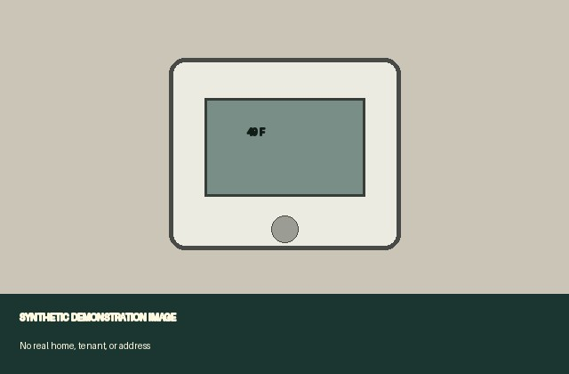

Cover sheet
- Case
- synthetic-demo-case
- Unit
- 4B (synthetic)
- Covers
- the whole unit
- Generated
- 2026-01-02T09:30:00Z
- Producer device
- 95bd-e08a-f8c8-2e6a
- Issues
- 2
- Media items
- 3 (3 timestamp tokens attached; authority trust not assessed here)
- Chain-of-custody entries
- 19
- Date range of evidence
- 2026-01-02 to 2026-01-02T09:15:00Z
- Sealed originals embedded
- no
What this packet proves — and what it does not
What successful verification can establish
- If integrity reports intact, the shared files match their recorded SHA-256 hashes and the signed, hash-linked custody record has not changed.
- If the timestamp authority reports trusted, the item existed no later than the verified RFC 3161 time — an upper bound on when it was created.
- Integrity and timestamp-authority trust are separate checks; both must pass before Habitable reports the item technically evidence-ready.
What this packet does not prove
- Who took a photo, or that it depicts a particular home or unit.
- That the underlying condition was as described — that rests on the tenant's own account, not on the cryptography.
- That a timestamp is the exact moment of capture — it is only an upper bound (the content existed by then).
- That an attached timestamp token comes from a trusted authority. That requires verification against a certificate you independently trust; development timestamps are never evidence-ready.
- Admissibility or any legal outcome. This is documentation, not legal advice.
How to verify: run `habitable verify PACKET --trusted-cert AUTHORITY.pem`, using a certificate you independently trust, or cross-check the hashes and RFC 3161 tokens with standard tools. The accessible reading is packet.html.
Scope of this export
Scope: the whole unit — every issue recorded in this vault is included.
What this packet discloses
- The shared photos in this packet have had location (GPS) removed, so they do not reveal where the tenant lives.
Chronological evidence timeline
Occurred is the date reported by the person; recorded is the separate device time when the entry was added. Version 3 events are custody-bound. Photos appear when captured.
- Occurred: 2026-01-02 — Synthetic portal displayed a delivery confirmation.
- Occurred: 2026-01-02 — Synthetic repair request sent to the property manager.
- Occurred: 2026-01-02 — Synthetic tenant observed new staining after rainfall.
- Occurred: 2026-01-02 — Synthetic thermostat display read 49 F during the night.
- Captured: 2026-01-02T09:05:00Z — Evidence captured for Recurring ceiling leak and mold-like spotting
- Captured: 2026-01-02T09:10:00Z — Evidence captured for Recurring ceiling leak and mold-like spotting
- Captured: 2026-01-02T09:15:00Z — Evidence captured for No heat overnight
Issue: No heat overnight
Synthetic scenario: the room remained cold while the heater was set to warm.
Timeline
- Occurred: 2026-01-02 · Condition observed: Synthetic thermostat display read 49 F during the night.
Captured evidence

Issue: Recurring ceiling leak and mold-like spotting
Synthetic scenario: staining returned after rain and spread across the ceiling.
Timeline
- Occurred: 2026-01-02 · Delivery confirmed: Synthetic portal displayed a delivery confirmation.
- Occurred: 2026-01-02 · Repair notice sent: Synthetic repair request sent to the property manager.
- Occurred: 2026-01-02 · Condition observed: Synthetic tenant observed new staining after rainfall.
Captured evidence


Chain of custody & integrity
Hash algorithm sha256 · 19 custody entries (append-only, hash-linked) · 3/3 items have timestamp tokens attached. This view does not validate token signatures or authority trust; use habitable verify with recipient-selected roots. The chain head below commits to the entire history; any insertion, deletion, or reordering changes it.
| Capture | Content hash (SHA-256) | Timestamp authorities | Custody |
|---|---|---|---|
| cap-7aa9ba7988096dfc | 3b8407885635d168ac0a676d18c194cd170403f4b559e69df29af8ef02be9ec8 | attached-unassessed: sample-offline-rfc3161 | 5 entries |
| cap-94e20dd1ca0f0b31 | 3ee3f8106e1718fdc4699c3bfa99ff005446008d54f0a71499c5aeb58dff8103 | attached-unassessed: sample-offline-rfc3161 | 5 entries |
| cap-c3a435d5b9a14d37 | 81dc3e113fbab34c8134646e2856cd546d668a6169d958aff5012a1c4e26e95d | attached-unassessed: sample-offline-rfc3161 | 5 entries |
Evidence appendix
Each row reports token presence only. It does not claim the token is valid or its authority trusted; verify independently against bundle.json.
| Capture | Content hash (SHA-256) | Timestamp status | Named authority |
|---|---|---|---|
| cap-7aa9ba7988096dfc | 3b8407885635d168ac0a676d18c194cd170403f4b559e69df29af8ef02be9ec8 | timestamp attached; authority trust not assessed | sample-offline-rfc3161 |
| cap-94e20dd1ca0f0b31 | 3ee3f8106e1718fdc4699c3bfa99ff005446008d54f0a71499c5aeb58dff8103 | timestamp attached; authority trust not assessed | sample-offline-rfc3161 |
| cap-c3a435d5b9a14d37 | 81dc3e113fbab34c8134646e2856cd546d668a6169d958aff5012a1c4e26e95d | timestamp attached; authority trust not assessed | sample-offline-rfc3161 |